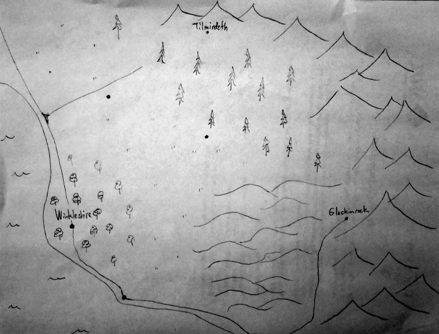

The Tripoint Problem
The once-revered humans are no more. No longer able to act as the glue between the other races, the population fell apart. Three new kingdoms were established: the elven kingdom Tilmindeth in the North, the dwarven kingdom Glaskinrock in the East, and the gnomish kingdom Winkleshire in the West.
A magician has called you, through a vision in a dream, to meet at a secret location near the place where the three kingdoms meet. In the vision, you felt warnings of a mad king bent on a hellish plan. You felt that time was short. You left as soon as you could, but too late. When you arrive, you find a group of adventurers and the magician, petrified. The adventurers, of all races, are arguing what is to be done.
Logs
The Legend of Infinite Tentacles
Map
